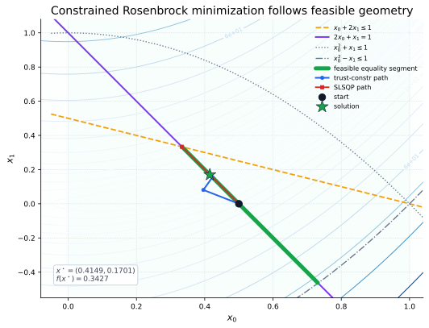
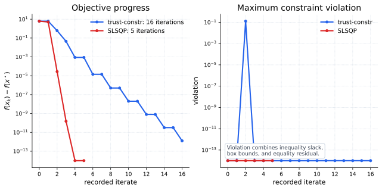
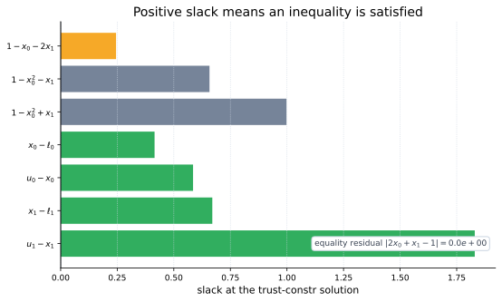

Core Idea
A constrained minimization problem adds feasible-set geometry to the usual scalar objective:
The optimizer must reduce the objective and drive constraint violation toward zero. This changes the meaning of a good step: moving downhill is not useful if the step leaves the feasible set in a way the method cannot repair.
Tutorial Problem
SciPy's constrained examples reuse the two-variable Rosenbrock function with a mixture of linear, nonlinear, equality, inequality, and bound constraints:

trust-constr and SLSQP
trust-constr is the most expressive constrained local
optimizer in minimize: it supports bounds, linear and
nonlinear constraints, sparse derivatives, and second-order
information. SLSQP solves sequential quadratic
approximations and is compact for smaller smooth constrained
problems.
| Method | Constraint interface | Good fit |
|---|---|---|
trust-constr |
Bounds, LinearConstraint, NonlinearConstraint |
General smooth constrained problems, especially when Hessians, Hessian-vector products, or sparsity are useful. |
SLSQP |
Dictionaries with type, fun, and optional jac |
Smaller smooth constrained problems where a mature SQP-style method is convenient. |

Constraint Slack
Inequality constraints are often easiest to audit through slack. Positive slack means the constraint is satisfied; zero slack means the constraint is active:

Using SciPy
The same problem can be represented with modern constraint objects
for trust-constr, or with dictionary constraints for
SLSQP.
import numpy as np
from scipy.optimize import Bounds, LinearConstraint, NonlinearConstraint, minimize
def rosen(x):
return 100.0 * (x[1] - x[0]**2)**2 + (1.0 - x[0])**2
def rosen_der(x):
return np.array([
-400.0 * x[0] * (x[1] - x[0]**2) - 2.0 * (1.0 - x[0]),
200.0 * (x[1] - x[0]**2),
])
bounds = Bounds([0.0, -0.5], [1.0, 2.0])
linear = LinearConstraint([[1.0, 2.0], [2.0, 1.0]], [-np.inf, 1.0], [1.0, 1.0])
nonlinear = NonlinearConstraint(
lambda x: np.array([x[0]**2 + x[1], x[0]**2 - x[1]]),
[-np.inf, -np.inf],
[1.0, 1.0],
)
trust = minimize(
rosen,
x0=np.array([0.5, 0.0]),
method="trust-constr",
jac=rosen_der,
constraints=[linear, nonlinear],
bounds=bounds,
)
ineq_cons = {
"type": "ineq",
"fun": lambda x: np.array([
1.0 - x[0] - 2.0 * x[1],
1.0 - x[0]**2 - x[1],
1.0 - x[0]**2 + x[1],
]),
}
eq_cons = {"type": "eq", "fun": lambda x: np.array([2.0 * x[0] + x[1] - 1.0])}
slsqp = minimize(
rosen,
x0=np.array([0.5, 0.0]),
method="SLSQP",
jac=rosen_der,
constraints=[eq_cons, ineq_cons],
bounds=[(0.0, 1.0), (-0.5, 2.0)],
)When To Use It
| Use constrained minimization when | Prefer another family when |
|---|---|
| The objective is smooth and the feasible set is described by bounds, equalities, or inequalities. | The objective is naturally a residual vector; then least_squares may expose better structure. |
| You can provide analytic gradients or Jacobians for the objective and constraints. | The feasible set is combinatorial or discrete; then linear, assignment, or mixed-integer tools may fit better. |
| Feasibility matters as much as objective reduction. | The search space has many local minima and broad global exploration is the first concern. |
result.fun and constraint
violation. In constrained optimization, a pretty objective value is
only meaningful when the point is feasible.